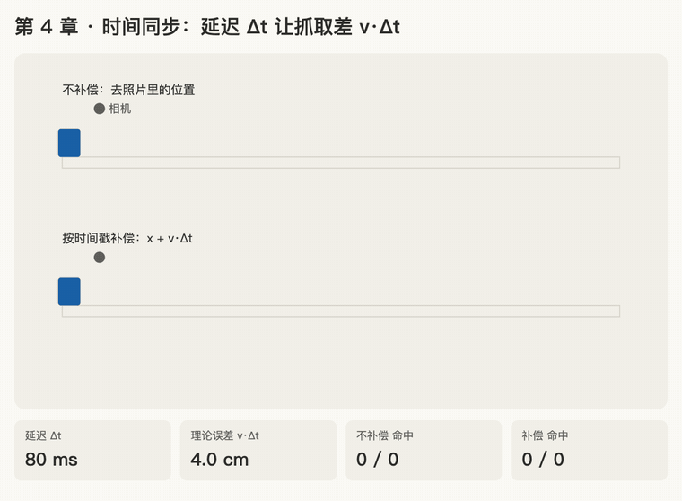

第 4 章 · 传感器：知道自己在哪，看见外面的世界
本章回答：机器人身上有哪些传感器？为什么"标定"和"时间同步"比传感器本身更容易出问题？多个传感器怎么融合？
编写日期：2026-11-04 · 上一章：第 3 章 执行器 · 下一章：第 5 章 电气与计算 · 总览：00-overview.md
对应原文：materials/text/modern-robotics-lynch-park.txt（Lynch & Park，Modern Robotics，2017 预印本） §11.1 L18864–L18868（关节编码器、力矩传感器、腕部六维力传感器）。外部传感器、标定、时间同步、融合原文没有，对照附录推荐的 Probabilistic Robotics 第 3 章和 Kalibr 文档（不在本地）
本章缩写：IMU（第 1 章）；F/T = Force/Torque（力 / 力矩，六维力传感器）；RGB = Red Green Blue（红 / 绿 / 蓝）；ToF = Time of Flight（飞行 / 时间）；LiDAR = Light Detection and Ranging（光 / 探测 / 与测距）；ChArUco = Chessboard + ArUco（棋盘格 + ArUco 标记）；PTP = Precision Time Protocol（精确 / 时间 / 协议，IEEE 1588）；IEEE = Institute of Electrical and Electronics Engineers（电气 / 电子 / 工程师协会）；USB = Universal Serial Bus（通用 / 串行 / 总线）；EKF = Extended Kalman Filter（扩展 / 卡尔曼 / 滤波）；VIO = Visual-Inertial Odometry（视觉 / 惯性 / 里程计）；VINS = Visual-Inertial Navigation System（视觉 / 惯性 / 导航 / 系统）；LIO = LiDAR-Inertial Odometry（激光雷达 / 惯性 / 里程计）；VLA（第 1 章）；\(\theta^{acc}\)：acc = accelerometer（加速度计）；\(x_{obs}\)：obs = observed（观测到的）；\(f_x\) / \(c_x\)：f = focal length（焦距），c = center（主点）；\(SE(3)\) = Special Euclidean group in 3D（三维 / 特殊 / 欧几里得群：旋转 + 平移）；ETH = Eidgenössische Technische Hochschule（德语：联邦 / 理工学院，这里指苏黎世联邦理工）；ASL = Autonomous Systems Lab（自主 / 系统 / 实验室）。全部缩写见 附录 · 缩写与术语表
讲解
第 1 步：两大类：向内看和向外看
白话类比：闭上眼你也知道自己手臂弯成什么样（本体感觉，proprioception）；睁开眼才看到桌上有什么（外部感知，exteroception）。
| 类 | 传感器 | 测什么 | 典型频率 | 常见坑 |
|---|---|---|---|---|
| 本体 | 电机端编码器（磁编 / 光编） | 转子角度 → FOC 换相、速度 | 10–40 kHz | 安装偏心 |
| 输出端编码器 | 关节真实角度（绕过减速器背隙 / 柔性） | 1 kHz | 双编码器对零 | |
| 电流传感 | 相电流 → 力矩估计 | 和 FOC 同频 | 温漂、齿槽力矩 | |
| 关节力矩传感器 | 关节真实力矩 | 1 kHz | 温漂、串扰、贵 | |
| 六维力 / 力矩传感器（F/T） | 腕部或脚底的 3 力 + 3 力矩 | 1 kHz 以上 | 重力补偿、零漂 | |
| IMU（加速度计 + 陀螺仪） | 姿态、角速度、加速度 | 200 Hz–1 kHz | 陀螺零偏漂移、振动 | |
| 外部 | RGB 相机（全局 / 卷帘快门） | 颜色、纹理 | 30–90 Hz | 运动模糊、卷帘畸变、曝光 |
| 深度相机（结构光、ToF、主动双目） | 每个像素的距离 | 30–90 Hz | 透明 / 反光物体、近距离盲区 | |
| LiDAR（机械 / 固态） | 点云距离 | 10–20 Hz | 稀疏、运动畸变 | |
| 触觉（GelSight 类视触觉、电子皮肤） | 接触位置、压力分布、滑动 | 30 Hz–1 kHz | 寿命、标定、布线 | |
| 麦克风阵列 | 语音、声源方向 | 16–48 kHz | 电机噪声 |
第 2 步：标定（calibration）：传感器在哪、朝哪
传感器的读数要变成"机器人坐标系里的东西"才能用，所以必须知道：
| 标定 | 求什么 | 常用方法 |
|---|---|---|
| 相机内参 | 焦距、主点、畸变系数 | 棋盘格 / ChArUco 板，张正友标定法 |
| 相机外参（固定相机） | 相机相对机器人底座的位姿 | 末端拿标定板走多个位姿 |
| 手眼标定（腕部相机） | 相机相对末端法兰的位姿 \(X\) | 解 \(AX = XB\)（Tsai–Lenz 等） |
| 相机–LiDAR / 相机–IMU | 两传感器之间的相对位姿和时间偏移 | Kalibr 等工具 |
| 运动学标定 | 连杆真实长度、关节零位 | 激光跟踪仪 / 视觉测量后最小二乘拟合 |
| 力传感器 | 零点、工具重力和质心 | 不同姿态静止采样拟合 |
为什么重要：外参错 5 mm，抓取就偏 5 mm。端到端策略（VLA）看似"不需要标定"，但它学到的是某个特定相机位置下的映射；部署时相机挪了，性能就掉——这是真机迁移最常见的坑之一。
第 3 步：时间同步：数据是"什么时候"的
白话类比：你看到的星光是几年前发出的。相机给你的画面也不是"现在"，而是曝光那一刻——中间隔着曝光、读出、USB 传输、解码、排队，加起来几十毫秒很常见。
物体以速度 \(v\) 移动，画面延迟 \(\Delta t\)，那么机器人以为物体在的位置和真实位置差：
传送带 0.5 m/s、延迟 60 ms → 差 3 cm，足够夹空。
做法：
- 每帧打硬件时间戳：用曝光时刻而不是"收到的时刻"。
- 统一时钟：所有设备对齐到同一个时钟——PTP（IEEE 1588，以太网设备）、硬件触发线（多相机同时曝光）、EtherCAT 分布式时钟。
- 延迟补偿：知道了 \(\Delta t\)，就用运动模型往前预测 \(\hat{x} = x_{\text{观测}} + v\,\Delta t\)。
- 对齐再融合：多个传感器的数据按时间戳插值到同一时刻再用（ROS 2 里
message_filters的近似时间同步）。
第 4 步：传感器融合：取长补短
每种传感器都有短板，融合就是让它们互补：
| 组合 | A 的短板 | B 的短板 | 融合后 |
|---|---|---|---|
| 陀螺仪 + 加速度计 | 陀螺积分会漂 | 加速度计噪声大、受运动加速度干扰 | 姿态稳定（互补滤波、Mahony / Madgwick） |
| IMU + 腿部运动学 | IMU 积分位置会漂 | 腿打滑时运动学会错 | 四足 / 人形的躯干速度估计（EKF） |
| 视觉 + IMU | 相机慢、怕模糊 | IMU 漂 | VIO（视觉惯性里程计，如 VINS、OpenVINS） |
| LiDAR + IMU | 点云运动畸变 | IMU 漂 | LIO（如 FAST-LIO） |
最简单的互补滤波（一维姿态角）：
陀螺仪负责"短期准"（高频），加速度计负责"长期不漂"（低频）。卡尔曼滤波是它的"自动调 \(\alpha\)"版本：按两边的不确定度加权。
动画演示

可交互版：animations/04-time-sync.html（拖动延迟滑块）。
怎么看：
- 两条传送带上的方块以同样速度往右走。相机每隔一段时间拍一张，但图片要晚 \(\Delta t\) 才到机器人手里。
- 上面一条"不补偿"：夹爪去"图里看到的位置"，结果总是落在方块后面 \(v\Delta t\)。
- 下面一条"按时间戳补偿"：用 \(x + v\Delta t\) 预测，夹爪正好落在方块上。
- 把延迟拖到 0，两条就一样了；拖到 150 ms，没补偿的那条几乎每次都夹空。
公式
| 名称 | 式子 |
|---|---|
| 延迟误差 | \(e = v\,\Delta t\) |
| 延迟补偿 | \(\hat x = x_{obs} + v\,\Delta t\) |
| 手眼标定 | \(AX = XB\) |
| 互补滤波 | \(\hat\theta_k = \alpha(\hat\theta_{k-1}+\omega_k\Delta t) + (1-\alpha)\theta^{acc}_k\) |
| 针孔相机投影 | \(u = f_x X/Z + c_x,\ v = f_y Y/Z + c_y\) |
练习与作答记录
题 1：机械臂末端以 0.3 m/s 移动，腕部相机图像从曝光到进入策略总共 80 ms。如果策略用的是"收到图片时"的关节角去配这张图，图和关节角之间差了多少距离？
作答：（待作答）
题 2：为什么陀螺仪"短期准长期漂"、加速度计"长期准短期噪"？互补滤波里 \(\alpha\) 取 0.98 意味着更相信哪一个？
作答：（待作答）
题 3：一个 VLA 在实验室训练得很好，搬到另一个房间同型号机器人上成功率大跌。从本章的角度列出两个可能原因。
作答：（待作答）
口诀
向内看编码器、IMU、力；向外看相机、雷达、触觉。
传感器不怕不准，怕不知道在哪、不知道是什么时候：先标定，再对时。
本章复习卡片
A10 本体 vs 外部感知、A11 时间同步与 \(e = v\Delta t\)、A12 互补滤波（见 review.md）
附录 · 延伸阅读
留给以后深入学习用，不影响本章主线。★ 是建议先读的。
推荐阅读
- ★ Thrun, Burgard, Fox，Probabilistic Robotics（2005）：第 3 章 Gaussian Filters（卡尔曼、EKF）、第 6 章 Robot Perception（传感器模型）。
- ★ Kalibr（ETH ASL 开源工具）文档：多相机、相机–IMU 的时空联合标定；Furgale et al.，"Unified Temporal and Spatial Calibration for Multi-Sensor Systems"，IROS 2013。
- Zhang，"A Flexible New Technique for Camera Calibration"，IEEE TPAMI 2000：张正友标定法。
- Tsai & Lenz，"A New Technique for Fully Autonomous and Efficient 3D Robotics Hand/Eye Calibration"，IEEE T-RA 1989：\(AX=XB\)。
- Madgwick，"An efficient orientation filter for inertial and inertial/magnetic sensor arrays"（2010 报告）：轻量姿态融合。
- Yuan et al.，"GelSight: High-Resolution Robot Tactile Sensors for Estimating Geometry and Force"，Sensors 2017：视触觉原理。
- 工具：OpenCV
calibrateCamera/calibrateHandEye、ROS 2message_filters、linuxptp。
数学原理
- 针孔模型与齐次坐标；刚体变换 \(SE(3)\)。
- 高斯分布、协方差、贝叶斯更新（卡尔曼滤波的基础）。
- 一阶低通 / 高通滤波的频域直觉。
公式清单
见正文"公式"一节的表。
代码对照：把本章的数字用代码算一遍
用 Python + NumPy（Numerical Python：数值 / Python）把讲义里讲过的数算一遍，不算练习题。代码在仓库本地
robot-system-architecture/solutions/chapter-code/ch04_sensors.py，配套测试tests/test_ch04.py，notebook 在notebooks/ch04_sensors.ipynb。Mac 上直接能跑，不需要 GPU：
bash cd robot-system-architecture/solutions/chapter-code uv run python ch04_sensors.py # 一步一步打印 uv run pytest tests/test_ch04.py
讲义 ↔ 代码（互补滤波的信号和相机参数是编的）：
| 讲义 | 公式 | 写法 | 跑出来 |
|---|---|---|---|
| 第 3 步 延迟误差 | \(e = v\Delta t\) | delay_error(0.5, 0.060) |
3.0 cm |
| 第 3 步 补偿 | \(\hat x = x_{obs} + v\Delta t\) | compensate |
0.200 m → 0.230 m |
| 第 4 步 只用陀螺 | 积分 \(\omega\) | np.cumsum(gyro) * dt |
10 秒漂 0.200 rad |
| 第 4 步 只用加速度计 | \(\theta^{acc}\) | acc |
均方根误差 0.050 rad |
| 第 4 步 互补滤波 | \(\alpha(\hat\theta+\omega\Delta t) + (1-\alpha)\theta^{acc}\) | complementary(..., alpha=0.95) |
均方根误差 0.008 rad |
| 公式表 针孔投影 | \(u = f_xX/Z + c_x\) | project |
(0.1, −0.05, 1) m → (380, 210) 像素 |
关键几行：
for k in range(1, len(gyro)):
est[k] = alpha * (est[k - 1] + gyro[k] * dt) + (1 - alpha) * acc_angle[k] # 陀螺往前推一步，再拿加速度计拉一下
代码里才看得到的 2 件事：
- 陀螺的零偏 0.02 rad/s 看起来很小，积 10 秒就是 0.2 rad（约 11°）。只积分的误差是一直往上涨的。
- 编数据时用了
np.random.default_rng(0)固定随机种子，所以每次跑出来的噪声一样，测试才能核对。
自己改一改（不影响练习答案）：
- 把
fake_imu里的零偏 0.02 改成 0，看"只积分陀螺"还漂不漂。 - 把传送带速度改成 1 m/s、延迟改成 150 ms，算一下差多少，对照动画里"几乎每次夹空"。